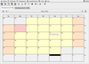
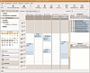
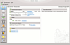
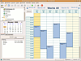

Personal Information Manager
Ein Personal Information Manager (kurz PIM) ist ein Programm, das im Idealfall Termine, Notizen, Aufgaben, Adressen, aber auch Briefe, Faxe und E-Mails verwaltet. Reine Terminverwaltungen sind im Artikel Kalender zu finden. Diese Seite soll einen Überblick über das momentane Softwareangebot für Ubuntu geben, wobei die Grenzen zwischen PIM und Aufgabenverwaltung fließend sind. Die Sortierung ist ohne Wertung und rein alphabetisch.
Grafische Programme¶

Borg Calendar¶
Der Borg Calendar  ist ein auf Java basierender und damit plattformunabhängiger Kalender mit folgenden Funktionen:
ist ein auf Java basierender und damit plattformunabhängiger Kalender mit folgenden Funktionen:
Erinnerungsfenster mit Alarmton und Uhrzeiteinstellung, kann auch vor/nach dem eigentlichen Ereignis eingestellt und wiederholt werden
Termine kopieren, verschieben, löschen
Suchfunktion, SQL-Abfrage
Notizblock, Adressbuch, Verschlüsselung, E-Mail-Benachrichtigung
Im-/Export in den Formaten iCal, CalDAV und XML
Voraussetzung ist Java 7 oder neuer. Zur Installation unter Linux lädt man die aktuelle JAR-Datei  herunter und speichert diese im Homeverzeichnis.
herunter und speichert diese im Homeverzeichnis.
Hinweis!
Fremdsoftware kann das System gefährden.
Dann startet man den Installationsassistenten in einem Terminalfenster mit dem Befehl:
java -jar borg_installer-VERSION.jar
Bei der Installation kann ein Programmstarter auf dem Desktop angelegt werden, mit dem das Programm später komfortabel aufgerufen werden kann. Die Deinstallation erfolgt prinzipiell ähnlich:
java -jar /PFAD/ZUM/BORG_CALENDAR/Uninstaller/uninstaller.jar

Evolution¶
Evolution ist das PIM- und Groupwareprogramm der GNOME-Desktopumgebung. Es beinhaltet E-Mail-Client und Newsreader, Kontaktverwaltung, Kalender, Aufgaben- und Notizverwaltung und die Synchronisation mit externen Geräten.

Kontact¶
ist der PIM- und Groupware-Client von KDE. Es besteht aus mehreren Einzelprogrammen, die sowohl separat aufgerufen werden können, gleichzeitig aber auch mit Kontact kommunizieren können und so die Verwaltung von E-Mail, Kontakten, Kalender, Aufgaben, Journalen, Notizen, Nachrichten unter einer Oberfläche ermöglichen. Details finden sich im Wiki-Artikel Kontact.

Thunderbird¶
Der eMail-Client Thunderbird lässt sich mit der Erweiterung Lightning um eine Kalenderfunktion erweitern. Mit dieser Kombination werden E-Mail, RSS-Feeds, Adressbuch, Kalender und Aufgaben abgedeckt. Die Kalender lassen sich mittels WebDAV und FTP synchronisieren.
 Übersichtsartikel
Übersichtsartikel- Erstellt mit Inyoka
-
 2004 – 2017 ubuntuusers.de • Einige Rechte vorbehalten
2004 – 2017 ubuntuusers.de • Einige Rechte vorbehalten
Lizenz • Kontakt • Datenschutz • Impressum • Serverstatus -
Serverhousing gespendet von